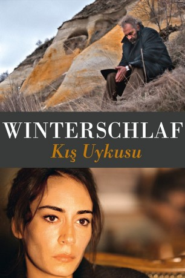

#1324 Winterschlaf
 
 IMDB-Wertung: 8.2 / 10
IMDB-Wertung: 8.2 / 10  Metascore: 88
Metascore: 88 
In den imposanten Bergen Kappadokiens betreibt der ehemalige Schauspieler Aydin ein Hotel, in dem er mit seiner deutlich jüngeren Frau und seiner gerade geschiedenen Schwester wohnt. Während draußen der Schnee das Land bedeckt, wird das Hotel zum Schauplatz der spannungsgeladenen Auseinandersetzungen Aydins mit seinem Umfeld. Der Gewinner der Goldenen Palme des diesjährigen Filmfestivals von Cannes verbindet grandiose Bilder einer archaischen Landschaft mit einem Kammerspiel um große Fragen über Liebe und Macht, Gesellschaft und Moral. Die präzisen Dialoge werfen einen Blick auf Menschen am Rand der Welt und dringen tief ins Herz der Gesellschaft ein. Regisseur Nuri Bilge Ceylan entwirft eine profunde Charakterstudie und gleichzeitig ein subtiles Sittenbild seiner türkischen Heimat, in der Meinungsfreiheit und -vielfalt bedroht sind.
Jahr: 2014
Dauer: 196 Minuten
FSK: 6
Land: Türkei Studio: Weltkino FilmverleihTonspuren:
Untertitel: Deutsch,
Auflösung: 1080p (1920x808) Größe: 6840 MB
Genre: Drama
Regisseur: Nuri Bilge Ceylan
Drehbuch: Ebru Ceylan, Nuri Bilge Ceylan, Anton Chekhov
Soundtrack:
Darsteller:
 Haluk Bilginer als Aydin
Haluk Bilginer als Aydin- Melisa Sözen als Nihal
- Demet Akbag als Necla
- Nejat Isler als Ismail
- Nadir Saribacak als Ogretmen Levent, Levent the teacher
- Mehmet Ali Nuroglu als Ogretmen Musterisi Timur, Timur, the teacher guest
- Emirhan Doruktutan als Ilyas
- Ayberk Pekcan als Sofor Hidayet, Hidayet the chauffeur
- Serhat Mustafa Kiliç als Hamdi
- Tamer Levent als Suavi
- Ekrem Ilhan als Atci Ekrem
- Rabia Özel als Fatma
- Fatma Deniz Yildiz als Sevda
- Masaki Murao als Japanese Tourist Erkek
- Junko Yokomizo als Japanese Tourist Kadin
- Gulsen Ozbakan als Hamdi Anne
- Ozlem Erol als Aydin Hizmetci, Aydin's maid
- Guler Kilic als Suavi Hizmetci
- Ali Kocaaslan als Istasyon Gorevlisi, Station Officer
- Hidir Kilic als Istasyondasi Adam, Adam at the station
- Ali Kemer als Inkici Atci
- Mehmet Turke als Konuk 1, Guest 1
- Ozcan Gorurgoz als Konuk 2, Guest 2
- Merve Uzul als Konuk 3, Guest 3
- Ozge Onderoglu Akkaya als Konuk 4, Guest 4
- Hasan Kalci als Konuk 5, Guest 5
- Vahdi Olmez als Konuk 6, Guest 8
- Gamze Kus als Konuk 7, Guest 7
Datei: X:\2014(N-Z)\Winterschlaf (2014, FSK6, 1920x808).mkv seit 22.06.2015
Festplatte: HD 2013(I-Z)-2014(A-Z)
 Es gibt insgesamt 163 Filme in der Gruppe '2014(N-Z)'
Es gibt insgesamt 163 Filme in der Gruppe '2014(N-Z)'